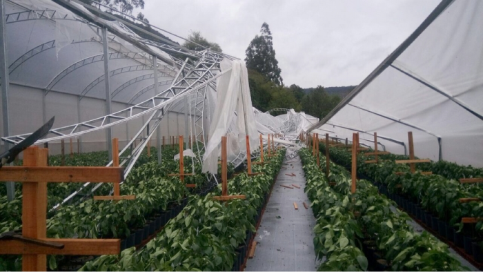

Agro News

Condições climáticas causam impacto na colheita do tomate
Segundo análise recente da Emater/RS-Ascar, as condições climáticas desfavoráveis causaram sérios danos à colheita de tomate na região de Caxias do Sul. Enquanto as lavouras precoces e intermediárias já encerraram a colheita, as plantações tardias foram colhidas de forma precoce e abrupta, levando a uma significativa redução no rendimento.
De acordo com relatos recentes, os agricultores se viram obrigados a deixar suas plantações devido à impossibilidade de conduzir práticas culturais e tratamentos fitossanitários. Isso resultou em frutos com um tempo de prateleira consideravelmente reduzido, afetando negativamente o processo de comercialização.